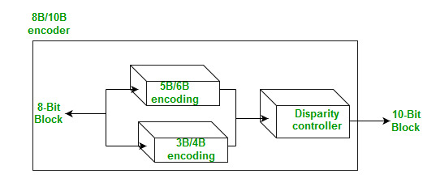

Conversion of Digital Data to Digital Signal involves three techniques:
- Line Coding
- Block Coding
- Scrambling
Out of which Line coding is always needed, block coding and scrambling may or may not be needed.
Block coding helps in error detection and re-transmission of the signal. It is normally referred to as mB/nB coding as it replaces each m-bit data group with an n-bit data group (where n>m). Thus, its adds extra bits (redundancy bits) which helps in synchronization at receiver’s and sender’s end and also providing some kind of error detecting capability.
It normally involves three steps: division, substitution, and combination. In the division step,a sequence of bits is divided into groups of m-bits. In the substitution step, we substitute an m-bit group for an n-bit group. Finally, the n-bit groups are combined together to form a stream which has more bits than the original bits.
Examples of mB/nB coding:
4B/5B (four binary/five binary ) –
This coding scheme is used in combination with NRZ-I. The problem with NRZ-I was that it has a synchronization problem for long sequences of zeros. So, to overcome it we substitute the bit stream from 4-bit to 5-bit data group before encoding it with NRZ-I. So that it does not have a long stream of zeros. The block-coded stream does not have more than three consecutive zeros (see encoding table).

At the receiver, the NRZ-I encoded digital signal is first decoded into a stream of bits and then decoded again to remove the redundancy bits.
Drawback – Though 4B/5B encoding solves the problem of synchronization,it increases the signal rate of NRZ-L.Moreover,it does not solve the DC component problem of NRZ-L.
8B/10B (eight binary/ten binary) –
This encoding is similar to 4B/5B encoding except that a group of 8 bits of data is now substituted by a 10-bit code and it provides greater error detection capability than 4B/5B.
It is actually a combination of 5B/6B and 3B/4B encoding.The most five significant bits of a 10-bit block is fed into the 5B/6B encoder; the least 3 significant bits is fed into a 3B/4B encoder. The split is done to simplify the mapping table.

A group of 8 bits can have 2^8 different combinations while a group of 10 bits can have 2^10 different combinations. This means that there are 2^10-2^8=768 redundant groups that are not used for 8B/10B encoding and can be used for error detection and disparity check.
Thus, this technique is better than 4B/5B because of better error-checking capability and better synchronization.
Reference-
Data Communications and Networking By Behrouz A.Forouzan(Book)